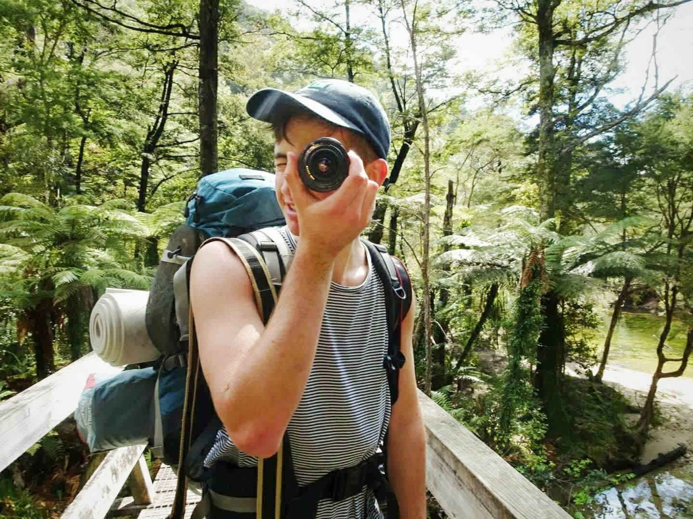

I've also been traveling overseas for 3 years and that has been a huge inspiration to my body of work, but currently I'm a regular freelancer for WildTomato Magazine as I reside here in Nelson.
If you would like to collaborate with me or wish to purchase one of my prints, get in touch at cameronmurray1998@gmail.com